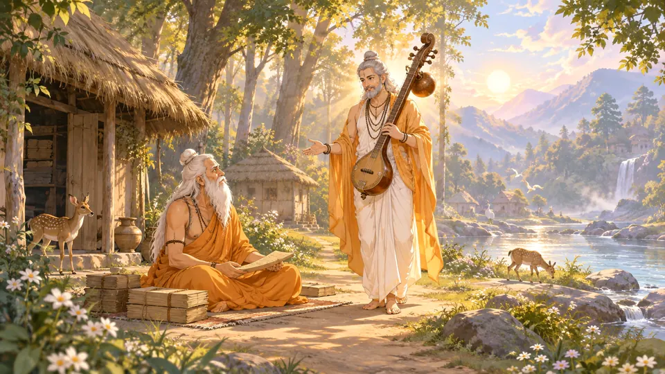
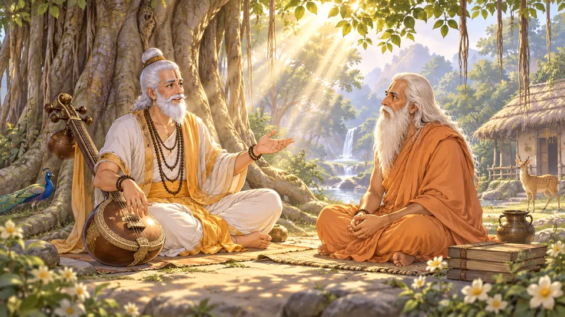
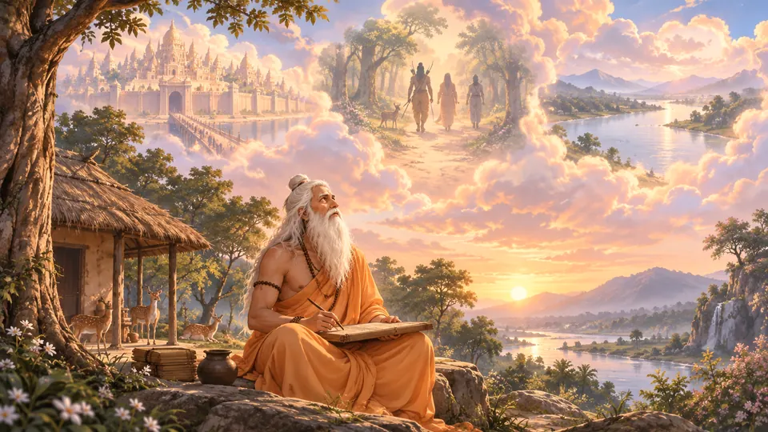
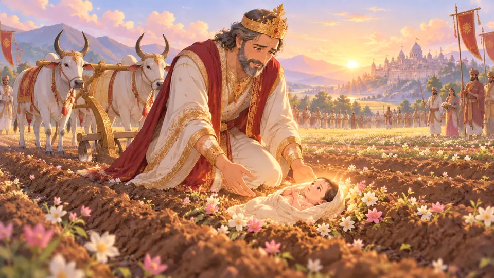
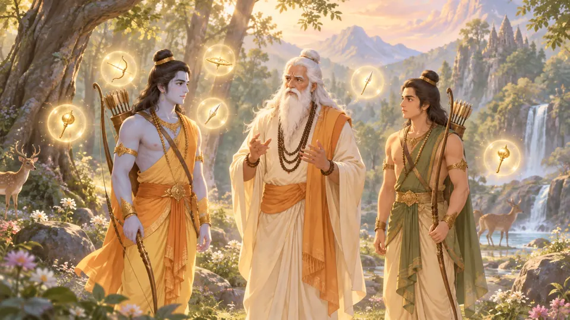
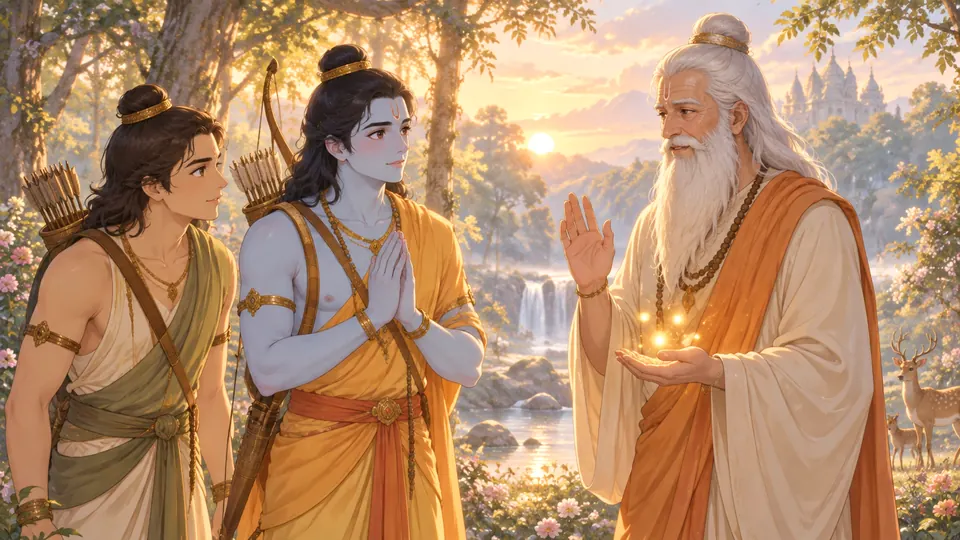

Welcome to Spritual
Stories that shaped a civilisation
Illustrated retellings from the Ramayana, the Mahabharata and the Puranas, in English and हिन्दी.
Prologue




Now showing
A question, a journey, a bow
Valmiki’s question, infant Sita in the sacred furrow, the discipline of recalling weapons, and the breaking of Shiva’s bow.
- 8 min read
- 11 scenes
- English and हिन्दी
11 scenes
- Scene 1A question in the ashrama

Scene 2No single answer
Scene 3An opening, not a verdict
Scene 4What the furrow held
Scene 5After receiving power
Scene 6The second question- Scene 7Carrying knowledge well
- Scene 8The hall of the bow
- Scene 9Permission before action
 Scene 10The sound that changed the room
Scene 10The sound that changed the room- Scene 11When the bow broke
Six worlds
Every collection opens on its own painting. Choose one and the stories inside it are waiting.
Starring
The people of the stories, each painted. Open one to see who they are and where they appear.


Every story
- RamayanaA question, a journey, a bow8 min read
 RamayanaPromises and partings7 min read
RamayanaPromises and partings7 min read RamayanaAn absence, a welcome, a way onward6 min read
RamayanaAn absence, a welcome, a way onward6 min read RamayanaThe work of trust7 min read
RamayanaThe work of trust7 min read- RamayanaAcross the sea, a sign of hope8 min read
 RamayanaThe journey home10 min read
RamayanaThe journey home10 min read- KrishnaBeneath a lifted mountain6 min read
 KrishnaA place beyond the palace7 min read
KrishnaA place beyond the palace7 min read- ShivaWhere the river paused6 min read
 DeviTwo requests beside the river7 min read
DeviTwo requests beside the river7 min read Ganesha & FamilyThe nearer world7 min read
Ganesha & FamilyThe nearer world7 min read- MahabharataThe companion he would not leave7 min read
Ways to read
A full reading room, built for slow attention.
- Three editionsEnglish, हिन्दी, or both side by side
- Dharma & source lensEvery dotted word, explained and sourced
- People of the storiesA study dossier for each figure
- A quiet momentSeventy seconds of breath, then back
- Festivals & their storiesWhat is coming, and why it matters
- Your commonplace bookReflections you keep, on your device

Let’s begin reading
Twelve stories, one at a time. Start anywhere; your place is kept on this device.
Start the first story